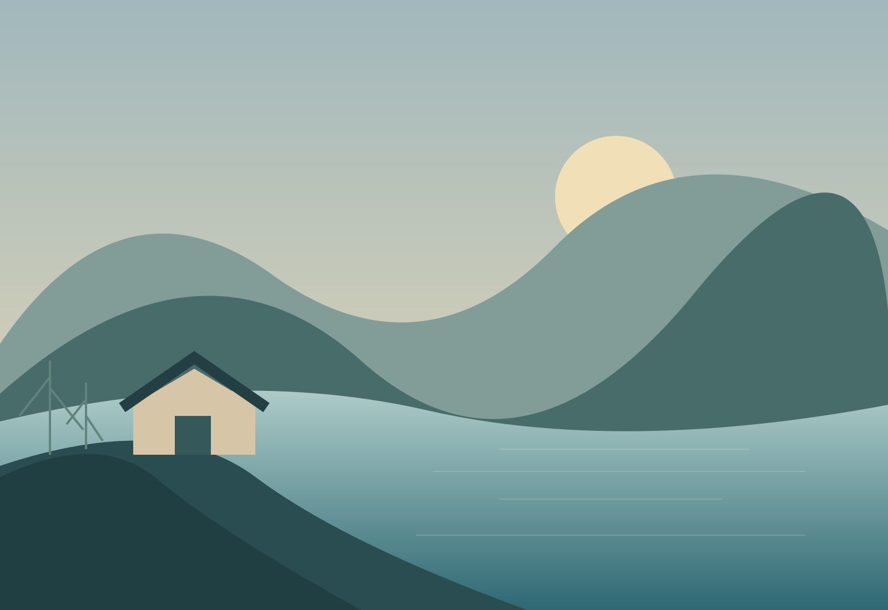

The shore house
A quiet base for a few days together, with generous shared space and a view that changes with the light.
Explore the houseMake room for quiet.
Slow mornings. Long walks. A place to spend time well. Explore a sample coastal retreat designed around the rhythm of the day.
Morning: quiet light, a slow breakfast, and a walk before the day fills.

Space for your kind of stay
Start with a place to sleep, then choose how much to leave unplanned. This is a fictional retreat used to demonstrate the design.
A quiet base for a few days together, with generous shared space and a view that changes with the light.
Explore the houseA flexible experience page for guided walks, hosted meals, or independent exploring. Replace sample offerings with your own.
Explore experiencesAround here
A useful guide helps guests plan around daylight, weather, access, and their own pace.
Open the local guideA morning outside. A table with room. An evening that does not need filling.
Send your dates and questions. Availability and booking terms are confirmed by the property, not by this sample website.